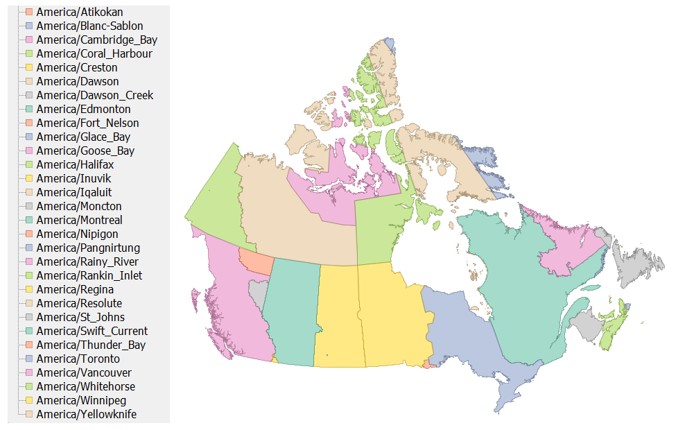

tz_canada, an efele.net/tz map
A shapefile of the TZ timezones of Canada
Last data update: May 28, 2016
Last page update: May 28, 2016
TZ version: 2016d
The tz_canada shapefile (zip, sha1) captures the TZ timezones of Canada.
The geometries are primarily derived from the fip10s layer, which is in turn primarily based on the VMAP0 polbnda layer. The sources of the intra-provinces boundaries are described below.
All the TZ timezones of Canada listed in TZ’s zone.tab are represented. In addition, we elected to retain America/Coral_Harbour as a geographical timezone.
Snapshot of the shapefile
This is a snaphsot of the shapefile (many of the smaller zones are not visible at this scale):

Logical description of the zones
CA01 Alberta
- America/Edmonton for the whole province
CA02 British Columbia
- America/Edmonton: east Kootenay region, including the city of Cranbrook. Data provided by Chris Walton
- America/Creston: area around Creston. Data provided by Chris Walton.
- America/Dawson_Creek: area around Dawson Creek. Data provided by Chris Walton.
- America/Fort_Nelson: the Northern Rockies Regional Municipality, data from BCStats
- America/Vancouver for the rest of the province
Chris Walton describes the area around Creston as follows:
The area includes:
- the section of Central Kootenay A electoral area lying east of Kootenay Lake
- all of Central Kootenay B electoral area
- all of Central Kootenay C electoral area
- -Creston 1 IR
- Town of Creston
- a small piece of East Kootenay electoral area C (includes the unincorporated community of Ryan).
CA03 Manitoba
- America/Winnipeg for the whole province
CA04 New Brunswick
- America/Moncton for the whole province
CA05 Newfoundland and Labrador
-
America/St_Johns, America/Goose_Bay: the boundary between the two is approximately that shown at http://www.canadiangeographic.ca/Magazine/SO98/alacarte.asp. Data provided by Chris Walton. Chris writes:
The boundary between Atlantic Time and Newfoundland Time is somewhat arbitrary and to the best of my knowledge is not published in any detail on any government issued maps. This is rugged terrain with very few people. I placed Cartwright and the Cartwright airport are on Atlantic Time and Paradise River on Newfoundland time which I believe to be correct.
CA07 Nova Scotia
- America/Halifax, America/Glace_Bay: the boundary between the two is ?
CA08 Ontario
- America/Rainy_River is around the town of Rainy River. We (arbitrarily) use the Rainy River township limits. Data digitized from CanMatrix map 052D15 Rainy River, 3rd edition.
- America/Thunder_Bay is around the town of Thunder Bay. We (arbitrarily) use the Thunder_Bay township limits. Data digitized from CanMatrix maps 052A06 Thunder Bay, 7th edition and 052A11 Onion Lake, 3rd edition.
- America/Nipigon is around the town of Nipigon. We (arbitrarily) use the Nipigon township limits. Data digitized from CanMatrix maps 052A16 Red Rock, 2nd edition and 052H01 Nipigon, 2nd edition.
- America/Atikokan is around the town of Atikokan. We (arbitrarily) use the township of Atikokan and the Quetico Provincial Park. Data provided by Chris Walton.
- the rest of the province is divided between America/Winnipeg (~ west of 90W) and America/Toronto (~ east of 90W). On the west side of 90W, the communities of Mishkeegogamang and Pickle Lake used America/Toronto. On the east side of 90W, the communities of Big Trout Lake, Angling Lake, Wunnummin Lake, Kasabonika, and Kingfisher Lake. Data provided by Chris Walton.
CA09 Prince Edward Island
- America/Halifax for the whole province
CA10 Quebec
- America/Blanc-Sablon is the Basse-Côte-Nord territory. Data provided by Chris Walton.
- America/Halifax for the Îles-de-la-Madeleine
- America/Moncton for the Listuguj reserve. Data provided by Chris Walton.
- America/Montreal for the rest of the province, including the whole of Anticosti Island (According to Justice Quebec, “Tout le territoire de la Minganie, qui inclut l’île d’Anticosti, vit à l’heure normale ou avancée de l’Est.” )
CA11 Saskatchewan
The Saskatchewan Time Act provides for various areas, in particular school divisions (before their reorganization) to choose their time.
- America/Swift_Current is around the town of Swift Current. We (arbitrarily) use the Swift Current city limits. [Should that be the Swift Current Time Option Area: the Swift Current Rural School Division No. 75 of
Saskatchewan, the Swift Current School Division No. 94
and the Swift Current Roman Catholic Separate School
Division No. 11 of Saskatchewan?] Data digitized from CanMatrix map 075J05 Swift Current, 3rd edition.
- America/Edmonton for the Battle River Time Option Area, defined by the Battle River School Division No. 60. Data provided by Chris Walton.
- America/Winnipeg for the area around ? [Should that be a Time Option Area?]. Data provided by Chris Walton.
- America/Regina for the rest of the province
CA12 Yukon Territory
- America/Dawson is around the town of Dawson. We (arbitrarily) use the township limits digitized from CanMatrix map 116B03 Dawson, 2nd edition
- America/Whitehorse for the rest of the province
CA13 Northwest Territories
- America/Inuvik is around Inuvik. We (arbitrarily) use the city limits digitized from CanMatrix map 107B07 Inuvik, 2nd edition
- America/Yellowknife for the rest of the province
CA14 Nunavut
- America/Resolute is the Cornwallis island
- America/Coral_Harbour is at least the Southampton island; we also include somewhat arbitrarily White and Coats islands and smaller islands in the area. Note that America/Coral_Harbour is linked by tz to America/Atikokan and does not appear in zone.tab, but it probably should
- America/Pangnirtung is the area east of 68W
- America/Iqaluit is the area between 85W and 68W, excluding the area attributed to America/Coral_Harbour
- America/Cambdridge_Bay and America/Rankin_Inlet form the rest of the territory. The boundary is ? Data provided by Chris Walton.
Construction of the shapefile
The ingredients (zip, sha1) contain a set of source shapefiles and a script to build the final map from them.
We have a separate shapefile for each province. In each shapefile, we capture the timezone boundaries internal to the province. The idea is that those shapefiles can be combined with various base shapefiles providing the provincial boundaries. (The particular problem we want to solve is that Canada has many islands, and we prefer to not have to worry about those and the provinces they are in when dealing with timezones).
Terms of use
 To the extent possible under law, Eric Muller has waived all copyright and related or neighboring rights to the efele.net/tz maps (comprising the shapefiles, the web pages describing them and the scripts and data used to build them).
This work is published from the United States of America.
To the extent possible under law, Eric Muller has waived all copyright and related or neighboring rights to the efele.net/tz maps (comprising the shapefiles, the web pages describing them and the scripts and data used to build them).
This work is published from the United States of America.
Note that this does not affect the rights others may have. I am not qualified to determine whether such rights exist.
Contact - Thanks
History:
- May 28, 2016:
- Extended America/Dawson_Creek north to join with America/Fort_Nelson.
- March 20, 2016:
- added SHA-1 of the zip files.
- November 7, 2015:
- Addition of America/Fort_Nelson.
- September 27, 2012:
- a couple of typos, thanks to Pavol Vaskovic.
- June 26, 2012:
- added America/Creston
- fixed a few geometries, thanks to Paul Salber
- March 16, 2010:
- fixed an overlap problem around lon -95.949, lat 66.98; thanks to Gary Baker for reporting this problem
- March 13, 2010:
- updated to TZ 2010e (no data change)
- November 10, 2009:
- updated the script to work with the latest PostGis release
- added the terms of use
- October 4, 2008:
- clarification of the Anticosti island
- added the missing America/Coral_Harbour
- east Kootenay region of BC moved to America/Edmonton
- added details on the data from Chris Walton
- September 16, 2008: first version